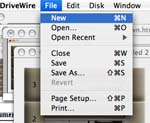

What's New in DriveWire MacServer?
This page tells you about some of the new features in DriveWire MacServer. To learn more about how to set up your CoCo and solve problems, click the Home button above to take you to the main access page for DriveWire MacServer Help.
Intuitive Graphical Interface |
|
 |
DriveWire MacServer uses the latest OS X technologies to bring you a highly intuitive, easy to use interface for your DriveWire-equipped CoCo. You can easily insert and eject virtual cartridges, monitor DriveWire traffic and create new catridges for your CoCo system. |
Document Based Interface |
|
|  |
With DriveWire MacServer, you can provide disk services for any number of Color Computer systems. It's easy to create a new DriveWire MacServer document and make the necessary changes to talk to your CoCo. You can even preserve the settings of a DriveWire MacServer document by saving it to disk for later loading. |
In-Depth Statistics and Logging Information |
|
|
As your CoCo communicates with DriveWire MacServer, you can monitor progress with a statistical and log view which displays transactions in detail. These views can be turned on or off to your liking, giving you as little or as much information as you would like to see. |
|
Additional New Features |
|
Among its new features, DriveWire MacServer has:
|